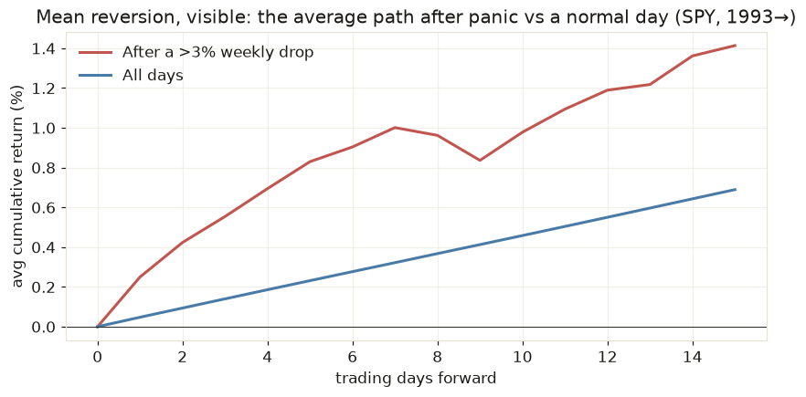
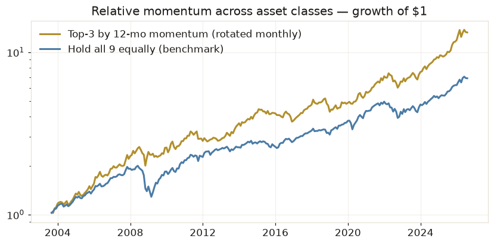

Every trading strategy, and why it gets paid
Every legitimate strategy answers: who is paying you, and why are they okay with it? Either you're collecting a risk premium (being paid to hold something uncomfortable) or you're exploiting a mispricing (someone systematically trades at bad prices — often because they must, not because they're dumb). If you can't name the payer, you don't have a strategy; you have a coincidence with good marketing.
1 · Mean reversion — buying panic, selling calm
In plain words: prices overshoot. When something falls hard and fast, it usually bounces — like a stretched rubber band. The mean reversion trader buys the panic and sells the recovery.
Who pays you: forced sellers. Margin calls, fund redemptions, stop-losses — people who must sell now at whatever price. You provide the liquidity they're begging for, and the bounce is your fee. This is a risk premium: you get paid for catching falling knives.
The demo — every time SPY fell more than 3% in a week since 1993 (620 times):
| Condition | Events | Avg next 5 days | Positive | Worst case |
|---|---|---|---|---|
| Any normal day (base rate) | — | +0.23% | — | — |
| After a >3% weekly drop | 620 | +0.83% | 63% | -19.8% |
| …drop during CALM vol | 59 | +1.08% | 73% | -5.1% |
| …drop during HIGH vol | 561 | +0.80% | 62% | -19.8% |

Read the table like a professional. The bounce is real — +0.83% in a week vs +0.23% base, 3.6× the normal rate. But look at the regime split: dips in calm markets bounced 73% of the time with a worst case of −5%; dips in high-vol markets bounced only 62% of the time with a worst case of −19.8% (that's October 2008 — the knife kept falling). Mean reversion's dirty secret: it wins small, often, and loses huge, rarely — the exact mirror of trend following. The regime filter isn't optional for this family; it's the strategy.
2 · Trend following — the one you already run
In plain words: what's been going up keeps going up longer than seems reasonable, and crashes take months, not days. Ride the trend, step aside when it breaks. Fully covered in chapter 2 — the demo is your own system.
Who pays you: everyone who reacts slowly — institutions that rebalance quarterly, committees that need meetings before selling. And in crashes, everyone who hoped. Trend followers lose small repeatedly (false alarms) and win huge occasionally — mean reversion's mirror twin, which is exactly why the two diversify each other in a portfolio.
3 · Relative momentum — own whatever is winning
In plain words: don't predict which asset will do well; just own whichever ones already are, and re-check monthly.
The demo — each month since 2003, hold the top 3 of 9 asset-class ETFs by trailing 12-month return:
| Portfolio | CAGR | Sharpe | Max drawdown |
|---|---|---|---|
| Top-3 by momentum, rotated monthly | 11.9% | 0.95 | -23.2% |
| Hold all 9 equally | 8.8% | 0.83 | -35.6% |

Who pays you: underreaction. Big news gets priced in over months (committees again), so winners keep winning for a while. Failure mode: turning points — momentum crashes hardest right after a bottom (2009: it was still short/absent from the things that rocketed). This demo is the queued asset_trend edge's cousin and the natural second strategy for your portfolio.
4 · Breakout — and why this demo fails on purpose
In plain words: buy when price exceeds its recent range high (someone knows something), exit when it breaks the range low. The classic is Donchian 55/20 — the 1980s "Turtle" system.
The demo, honestly: on SPY it loses badly — 3.7% CAGR vs 10.8% for buy & hold, with a Sharpe of 0.45 vs 0.64. Why show a failure? Because the lesson is worth more than a win: strategies are instrument-specific. Breakouts made the Turtles rich on commodities and currencies — markets that trend hard when they move. A stock index chops and mean-reverts around a drift, so breakouts buy every local top. Running the right family on the wrong instrument is one of the quietest ways to lose money with a "proven" system.
5 · Pairs & statistical arbitrage — trading the gap, not the direction
In plain words: find two things that move together (Coke and Pepsi). When the gap between them stretches unusually wide, bet it closes — long the laggard, short the leader. You don't care where the market goes; you're trading the relationship.
The demo: over 10 years, the KO/PEP spread stretched beyond 2 standard deviations 41 times — and reverted to normal within 60 days 93% of the time, median 24 days. The mechanism is very real. Now the cold shower: the "perfect" pair, GLD vs IAU (two funds holding literally the same gold), has a daily spread wobble of just 6 basis points — less than round-trip trading costs. The purest mispricings are exactly the ones already arbitraged to dust. An effect is not an edge until it survives costs — the single most important sentence on this page.
6 · Carry — being paid to hold (no demo needed)
In plain words: collect a payment simply for holding a position: bond coupons, dividends, selling options premium (being the insurance company). The steadiest income in markets — and the most dangerous psychology, because carry pays you daily right up until the event it insured against arrives. The pros call it "picking up nickels in front of a steamroller." It's a legitimate family (much of finance IS carry), but it's the last one a beginner should automate, precisely because its risk hides longest.
The map — six families, one table
| Family | Who pays you | Win pattern | Dies when | Your status |
|---|---|---|---|---|
| Mean reversion | Forced sellers | Small, often | Real crashes (knife keeps falling) | Candidate #3 — needs regime filter |
| Trend following | Slow reactors, hopers | Huge, rarely | Choppy sideways markets | Live — your exposure dial |
| Relative momentum | Underreaction | Steady drift capture | Sharp turning points | Queued — asset_trend edge |
| Breakout | Range traders | Occasional big trends | Mean-reverting instruments (SPY!) | Rejected for indexes — demo above |
| Pairs / stat-arb | Temporary dislocations | Small, very often | Costs; relationships breaking | Educational — capacity too small |
| Carry | Insurance buyers | Daily drips | The insured event happening | Not yet — last to automate |
Look at the win patterns: mean reversion wins small-and-often and loses in crashes; trend loses small-and-often and wins in crashes. Their P&L curves are near-mirror images — run both and the combined curve smooths dramatically. That complementarity, repeated across families, is the entire argument for a portfolio of strategies (stage 3), and it's why the trader in that video runs nine bots, not one.